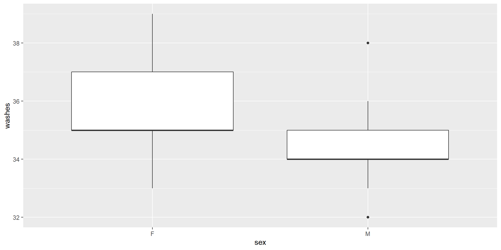
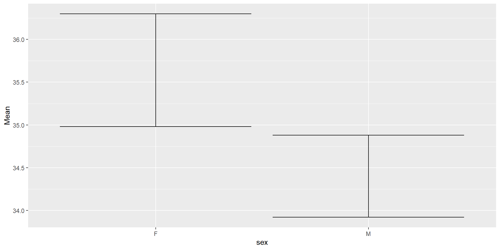

# A tibble: 2 × 5
sex SampleSize Mean SD SE
<chr> <int> <dbl> <dbl> <dbl>
1 F 25 35.6 1.68 0.336
2 M 25 34.4 1.22 0.245Important
All the code you need are on the slides. Remember: try to always manually type the code instead of copying and pasting. This is the most effective way to help you learn and complete assignments quickly!
library(): loads packagesread_csv("name-of-file.csv"): imports data from name-of-file.csv. Always remembering to assign it to a variable with <-\(\underbrace{\text{ggplot(table_name, aes(x=...y=...))}}_{\text{Info layer}} + \underbrace{\text{geom_...()}}_{\text{Plot layer}} + \underbrace{\text{facet_wrap(~grouping_variable)}}_{\text{Grouping layer}}\)
table_name you want on the x axistable_name you want on the y axis
y is optional depending on the type of plotgeom_histogram(): histogram.geom_freqpoly(): frequency polygon.geom_boxplot(): boxplot.geom_errorbar(): “error” bars or CI bars~ in facet_wrap()grouping_variablegrouping_variable as necessary. grouping_variable is the column name you want to make comparisons acrossIn case studies, descriptive statistics always includes the following components
summary_table <- table_name %>% group_by(grouping_variable) %>%
summarize(SampleSize = n(), Mean = mean(...), SD = sd(...), SE = SD/sqrt(SampleSize)
# A tibble: 2 × 5
sex SampleSize Mean SD SE
<chr> <int> <dbl> <dbl> <dbl>
1 F 25 35.6 1.68 0.336
2 M 25 34.4 1.22 0.245grouping_variable as necessary. grouping_variable is the column name you want to make comparisons acrossn() counts the number of rows in each group... with the appropriate column name of table_name.%>%: an operator that allows you to change together functions.group_by(): groups data by a column that you specify.summarize(): summarizes data across the dataset or group. Similar to mutate(), which adds or changes a column.Important
You may have to add a grouping layer. See the “Plots with ggplot()” section in these slides for more info.
Note
Needs both x and y variables, where x is the grouping variable.


grouping_variable with the actual correct variable.grouping_variable? Hint: print out your CI table at find the column name that makes the most sense.
sexSee Week 6 Slides · ↗ · ⤓ and Week 7 Slides · ↗ · ⤓